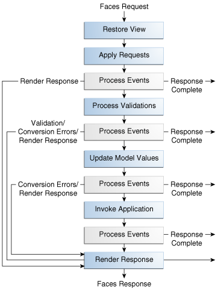

Copyright © 2017, Oracle and/or its affiliates. All rights reserved.
Copyright © 2017, Oracle and/or its affiliates. All rights reserved.
|
Java Platform, Enterprise Edition (Java EE) 8 The Java EE Tutorial |
| Previous | Next | Contents |
The lifecycle of an application refers to the various stages of processing of that application, from its initiation to its conclusion. All applications have lifecycles. During a web application lifecycle, common tasks are performed, including the following.
Handling incoming requests
Decoding parameters
Modifying and saving state
Rendering web pages to the browser
The JavaServer Faces web application framework manages lifecycle phases automatically for simple applications or allows you to manage them manually for more complex applications as required.
JavaServer Faces applications that use advanced features may require interaction with the lifecycle at certain phases. For example, Ajax applications use partial processing features of the lifecycle (see Partial Processing and Partial Rendering). A clearer understanding of the lifecycle phases is key to creating well-designed components.
A simplified view of the JavaServer faces lifecycle, consisting of the two main phases of a JavaServer Faces web application, is introduced in A Simple JavaServer Faces Application. This section examines the JavaServer Faces lifecycle in more detail.
The lifecycle of a JavaServer Faces application begins when the client makes an HTTP request for a page and ends when the server responds with the page, translated to HTML.
The lifecycle can be divided into two main phases: Execute and Render. The Execute phase is further divided into subphases to support the sophisticated component tree. This structure requires that component data be converted and validated, component events be handled, and component data be propagated to beans in an orderly fashion.
A JavaServer Faces page is represented by a tree of components, called a view. During the lifecycle, the JavaServer Faces implementation must build the view while considering the state saved from a previous submission of the page. When the client requests a page, the JavaServer Faces implementation performs several tasks, such as validating the data input of components in the view and converting input data to types specified on the server side.
The JavaServer Faces implementation performs all these tasks as a series of steps in the JavaServer Faces request-response lifecycle. Figure 7-3 illustrates these steps.

The request-response lifecycle handles two kinds of requests: initial requests and postbacks. An initial request occurs when a user makes a request for a page for the first time. A postback request occurs when a user submits the form contained on a page that was previously loaded into the browser as a result of executing an initial request.
When the lifecycle handles an initial request, it executes only the Restore View and Render Response phases, because there is no user input or action to process. Conversely, when the lifecycle handles a postback, it executes all of the phases.
Usually, the first request for a JavaServer Faces page comes in from a
client, as a result of clicking a link or button component on a
JavaServer Faces page. To render a response that is another JavaServer
Faces page, the application creates a new view and stores it in the
javax.faces.context.FacesContext instance, which represents all of the
information associated with processing an incoming request and creating
a response. The application then acquires object references needed by
the view and calls the FacesContext.renderResponse method, which
forces immediate rendering of the view by skipping to the
Render Response Phase of the lifecycle, as is shown by the
arrows labelled Render Response in Figure 7-3.
Sometimes, an application might need to redirect to a different web
application resource, such as a web service, or generate a response that
does not contain JavaServer Faces components. In these situations, the
developer must skip the Render Response phase by calling the
FacesContext.responseComplete method. This situation is also shown in
, with the arrows labelled Response Complete.
The most common situation is that a JavaServer Faces component submits a request for another JavaServer Faces page. In this case, the JavaServer Faces implementation handles the request and automatically goes through the phases in the lifecycle to perform any necessary conversions, validations, and model updates and to generate the response.
There is one exception to the lifecycle described in this section. When
a component’s immediate attribute is set to true, the validation,
conversion, and events associated with these components are processed
during the Apply Request Values Phase rather than in a
later phase.
The details of the lifecycle explained in the following sections are
primarily intended for developers who need to know information such as
when validations, conversions, and events are usually handled and ways
to change how and when they are handled. For more information on each of
the lifecycle phases, download the latest JavaServer Faces Specification
documentation from https://jcp.org/en/jsr/detail?id=372.
The JavaServer Faces application lifecycle Execute phase contains the following subphases:
When a request for a JavaServer Faces page is made, usually by an action, such as when a link or a button component is clicked, the JavaServer Faces implementation begins the Restore View phase.
During this phase, the JavaServer Faces implementation builds the view
of the page, wires event handlers and validators to components in the
view, and saves the view in the FacesContext instance, which contains
all the information needed to process a single request. All the
application’s components, event handlers, converters, and validators
have access to the FacesContext instance.
If the request for the page is an initial request, the JavaServer Faces implementation creates an empty view during this phase and the lifecycle advances to the Render Response phase, during which the empty view is populated with the components referenced by the tags in the page.
If the request for the page is a postback, a view corresponding to this
page already exists in the FacesContext instance. During this phase,
the JavaServer Faces implementation restores the view by using the state
information saved on the client or the server.
After the component tree is restored during a postback request, each
component in the tree extracts its new value from the request parameters
by using its decode (processDecodes()) method. The value is then
stored locally on each component.
If any decode methods or event listeners have called the
renderResponse method on the current FacesContext instance, the
JavaServer Faces implementation skips to the Render Response phase.
If any events have been queued during this phase, the JavaServer Faces implementation broadcasts the events to interested listeners.
If some components on the page have their immediate attributes (see
The immediate Attribute) set to true, then
the validations, conversions, and events associated with these
components will be processed during this phase. If any conversion fails,
an error message associated with the component is generated and queued
on FacesContext. This message will be displayed during the Render
Response phase, along with any validation errors resulting from the
Process Validations phase.
At this point, if the application needs to redirect to a different web
application resource or generate a response that does not contain any
JavaServer Faces components, it can call the
FacesContext.responseComplete method.
At the end of this phase, the components are set to their new values, and messages and events have been queued.
If the current request is identified as a partial request, the partial
context is retrieved from the FacesContext, and the partial processing
method is applied.
During this phase, the JavaServer Faces implementation processes all
validators registered on the components in the tree by using its
validate (processValidators) method. It examines the component
attributes that specify the rules for the validation and compares these
rules to the local value stored for the component. The JavaServer Faces
implementation also completes conversions for input components that do
not have the immediate attribute set to true.
If the local value is invalid, or if any conversion fails, the
JavaServer Faces implementation adds an error message to the
FacesContext instance, and the lifecycle advances directly to the
Render Response phase so that the page is rendered again with the error
messages displayed. If there were conversion errors from the Apply
Request Values phase, the messages for these errors are also displayed.
If any validate methods or event listeners have called the
renderResponse method on the current FacesContext, the JavaServer
Faces implementation skips to the Render Response phase.
At this point, if the application needs to redirect to a different web
application resource or generate a response that does not contain any
JavaServer Faces components, it can call the
FacesContext.responseComplete method.
If events have been queued during this phase, the JavaServer Faces implementation broadcasts them to interested listeners.
If the current request is identified as a partial request, the partial
context is retrieved from the FacesContext, and the partial processing
method is applied.
After the JavaServer Faces implementation determines that the data is
valid, it traverses the component tree and sets the corresponding
server-side object properties to the components' local values. The
JavaServer Faces implementation updates only the bean properties pointed
at by an input component’s value attribute. If the local data cannot
be converted to the types specified by the bean properties, the
lifecycle advances directly to the Render Response phase so that the
page is re-rendered with errors displayed. This is similar to what
happens with validation errors.
If any updateModels methods or any listeners have called the
renderResponse method on the current FacesContext instance, the
JavaServer Faces implementation skips to the Render Response phase.
At this point, if the application needs to redirect to a different web
application resource or generate a response that does not contain any
JavaServer Faces components, it can call the
FacesContext.responseComplete method.
If any events have been queued during this phase, the JavaServer Faces implementation broadcasts them to interested listeners.
If the current request is identified as a partial request, the partial
context is retrieved from the FacesContext, and the partial processing
method is applied.
During this phase, the JavaServer Faces implementation handles any application-level events, such as submitting a form or linking to another page.
At this point, if the application needs to redirect to a different web
application resource or generate a response that does not contain any
JavaServer Faces components, it can call the
FacesContext.responseComplete method.
If the view being processed was reconstructed from state information from a previous request and if a component has fired an event, these events are broadcast to interested listeners.
Finally, the JavaServer Faces implementation transfers control to the Render Response phase.
During this phase, JavaServer Faces builds the view and delegates authority to the appropriate resource for rendering the pages.
If this is an initial request, the components that are represented on the page will be added to the component tree. If this is not an initial request, the components are already added to the tree and need not be added again.
If the request is a postback and errors were encountered during the
Apply Request Values phase, Process Validations phase, or Update Model
Values phase, the original page is rendered again during this phase. If
the pages contain h:message or h:messages tags, any queued error
messages are displayed on the page.
After the content of the view is rendered, the state of the response is saved so that subsequent requests can access it. The saved state is available to the Restore View phase.
| Previous | Next | Contents |
Copyright © 2017, Oracle and/or its affiliates. All rights reserved.